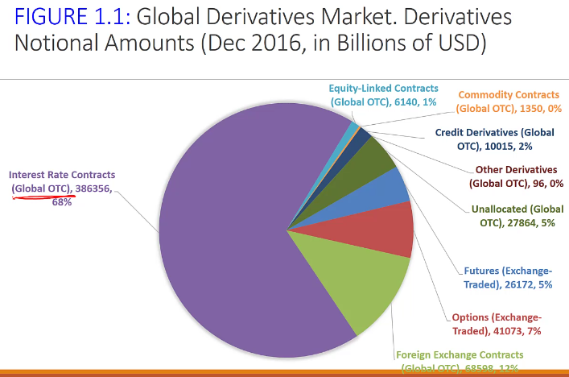

What is a Derivative?
A derivative is an instrument whose value depends on, or is derived from, the value of another asset
Examples are:
Assets
Derivatives
- Options
- Swaps
- Futures
- Forwards
- Futures
- Options
What is the point of a derivative?
- Helps you hedge (reduce) risk
- Magnify risk
- Arbitrage opportunities
Why derivatives are important
- Derivatives play a key role in transferring risks in the economy
- The underlying assets include stocks, currencies, interest rates, commodities, debt instruments, electricity, insurance payouts, the weather, etc
- Many financial transactions have embedded derivatives
- The real options approach to assessing capital investment decisions has become widely accepted
Early Evolution of Derivatives

In the 1970's, foreign currency futures were introduced.
Before 1970, the derivatives market was small. ONly future contracts had a well-functioning market. Financial derivatives were unknown and non satisfactory option pricing model existed.
Then starting in the 1970's, new derivative contracts were introduced which opened new excahnges, consolidated and linked exchanges. This was advanced with computer technology.
Exchange Rate Risk: Bretton Woods
The Bretton Woods Agreement (1944) set up a system of fixed exchange rate between the US dollar and other currencies. The value of the dollar was then fixed to the price of gold.
The price of gold was rising around the world, so people were buying gold in the US and would sell it abroad.
Currency Exchange Risk became a thing.
In 1971, President Richard Nixon ended Bretton Woods.
In 1972, the Chicago Mercantile Excahnge (CME or Merc) introduced foreign currency futures.
Interest Rate Risk
During the 1950s and 1960s, interest rates were low and relatively stable
During the 1970s, supply shocks led to high inflation rates.
In 1979, the Fed began targeting money supply growth.
Developments during the 1970s led to volatile, double digit interest rates. A need for hedging interest rate risk arose.
The
Over the counter contracts are the largest portion because their assets are huge